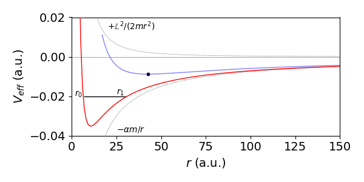

6 Limits, l’Hopital’s rule, Maximum & Minimum. Calculus of Variations
Contents
6 Limits, l’Hopital’s rule, Maximum & Minimum. Calculus of Variations#
6 l’ Hopital’s rule#
In many calculations limits are encountered. For example, in the theory of diffraction the function \(\sin(x)/x\) is met which, when \(x \to 0\), has the form \(0/0\) and at first sight this ratio seem to be indeterminate. There are other forms similar to this such as \(\infty/\infty,\, \infty/0,\, 0\times \infty,\, 0\times 0,\, \infty-\infty\) and l’Hopital’s rule is a method, sometimes used with a little additional ingenuity, of determining these limits. This topic is discussed here, not only because it requires differentiation, but also because it will be needed in the next section. It seems that Johann Bernoulli first worked this out, but it is named after l’Hopital who was one of his pupils.
The method is
(a) Rearrange the limit required, if necessary, so that it becomes a ratio. This may require some cunning.
(b) Differentiate top and bottom separately with respect to the limit variable.
(c) Substitute in the limit and check if the ratio is still indeterminate. If it is return to (b) if not the answer has been found.
An example should make this clearer; the ratio \(\displaystyle \frac{\sin(x)}{x}\) appears to be \(0/0\) as \(x \to 0\) but it has a finite value which is determined using l’Hopital’s Rule:
and the limiting value of \(x = 0\) is only applied in the last step. As a check, one way to determine any limits close to zero is to plot the function. You will see that \(\displaystyle \lim_{x\to 0}\frac{\sin(x)}{x}\) does indeed have a value of 1 at \(x = 0\). See question 47 for other examples.
Expressions such as \(\displaystyle \frac{e^x-1}{x^2}\) often need to be evaluated when \(x \to 0\) or \(x \to \infty\). In statistical mechanics, for example, \(x\) may be \(-E/k_BT\), a ratio of energies where \(k_B\) is the Boltzmann constant and \(T\) temperature. When \(x \to 0\), which corresponds to high temperatures, the function \(\displaystyle(e^x - 1)/x^2\) appears to have the indeterminate form \(0/0\), but the limit by l’Hopital’s is
where differentiation was performed twice over. However, this is wrong: no check for an indeterminate ratio was made after the first differentiation and doing this gives,
The other limiting case \(x \to \infty\) is also infinity: note that after the first differentiation checking the ratio gives \(\displaystyle \frac{e^x}{2x} = \frac{\infty}{\infty}\) so indeterminate and so continue to differentiate again
and this result is because \(e^x\) increases faster with \(x\) than \(x^2\) does. You could plot a graph to see that this is true.
The limit \(\displaystyle \lim_{x\to\infty} \frac{e^{-x}-1}{x^2-3}\) can perhaps be appreciated by looking at the ratio and noticing that when \(x\) is large \(e^{-x}\) becomes small but \(x^2\) large so the limit is expected to be zero. Checking this properly gives the same result as intuition:
When the limit is a product this must be rearranged first, for instance \(\displaystyle \lim_{x\to 0} x \ln(x)\) should be rearranged to
Fractions are treated similarly; the following fraction is nominally undefined as \(\infty -\infty\) but is rearranged into a ratio to become undefined as \(0/0\);
In the last step substituting for \(x=0\) gives the ratio as \(0/1\) so the limit is zero.
(i) Chemical equilibria#
In a second order reaction of the form
the rate of change of \(C\) is
where \(C\equiv [C]\) etc. for clarity. Re-writing the equation using \(A_0-A=B_0-B=C_0+C=D_0+D\), where the subscript \(0\) indicates the initial amount, and assuming initially that only \(A\) and \(B\) are present so that \(C_0=D_0=0\) then
which can be integrated but we are interested in the equilibrium when the rate of change is zero. Letting \(C_e\) be the equilibrium amount gives
and when \(A_0 = B_0\) this simplifies to
which has the solution
To find the concentration when \(K_e=1\) the fraction seems to be \(0/0\). Using L’Hopital’s rule and differentiating with \(K_e\) gives
which makes sense as there are equal moles initially of \(A\) and \(B\) so in total \(2A_0\) and equal concentrations for each species but only in this particular case.
(ii) Diffraction intensity#
The intensity of line of \(N\) emitters, such as point sources that are also coherent as occurs in the theory of interference and diffraction, is given by
where \(I_0\) is the initial intensity of each emitter and \(I\) the intensity when the phase difference between emitters is \(\delta\). As each emitter radiates over all \(4\pi\) angles only at certain values of these angles do the waves add up, i.e. they are in phase and so form a maxima and the equation describes how the intensity changes with phase. See Chapters 9 & 10 of ‘Optics’ by Hecht & Zajac (1982).
When \(N=1, I=I_0\) and when \(N=2,I=4I_0\cos^2(\delta/2)\), but what is the maximum intensity for any \(N\)? To find this we can use l’Hopital’s rule with \(\delta=2m\pi,\;m=0,\pm 1,\pm 2\cdots\) meaning that the phase difference must be equivalent to a whole number of wavelengths for the intensity to be at a maximum. Simplifying gives
thus we need only
making the maximum intensity \(I=N^2I_0\) when \(\delta=2\pi m\) which makes the cosines \(1\). See fig 15 in chapter 9, ‘Fourier Transforms’ for a figure of the sinc function where \(\mathrm{sinc}(ax)=\sin(ax)/(ax)\).
(iii) Transitions between stationary states#
When a molecule absorbs light it can undergo a transition from, for example the ground state to the first excited state. This might be a vibrational or rotational transition or an electronic one in which a new electronic state is produced. This type of transition is called an electric dipole transition. The probability for this depends on the radiation’s (light) frequency \(\nu\) in that the Bohr condition is obeyed \(E_1-E_0=h\nu\) where the energy levels are \(E_0,E_1\). The probability of absorption is
and we are interested in what happens as \(E_1-E_0\to h\nu\) when \(f(\nu)\to 0/0\). To determine this l’Hopital’s rule can be used. We make the substitution \(x=E_1-E_0-h\nu\) and look for the limit \(x\to 0\) and for clarity we also let \(\tau=t/2\hbar\), then
which still has the variable in both numerator and denominator so differentiating again produces
when in making the limit \(x\to 0\) is used.
6.1 Beware of ‘False fractions’#
Sometimes a limit is required but the expression is not really a fraction, for example \(\displaystyle \lim_{x\to 1} \frac{x^4-1}{x-1} \) which looks like a fraction but is simplified to \(\displaystyle \lim_{x\to 1} \frac{(x-1)(x^3+x^2+x+1)}{(x-1)} \) and because the value \(x = 1\) is never reached ( we are seeking the limit to not the value at \(x = 1\)) the \(x-1\) terms can be cancelled out leaving \(\lim_{x\to 1} (x^3+x^2+x+1)=4 \)
7 Extrema: maxima, minima and inflection points#
One very useful property of derivatives is that they allow us to find the maxima and minima of functions; these are also called stationary points of the function. The extrema might be the maximum or minimum but can also be the limit where the function goes to \(\pm \infty\).
The maximum of a curve is a point in whose locality all surrounding points have smaller \(y\) values. The minimum is defined similarly but points adjacent to it have larger y values and in both case the gradient is exactly zero. In Fig. 12 it is clear that the gradient is zero at the maximum and again at the minimum of the curve. The graph shows the first \(f'\) and second \(f''\) derivatives. An inflexion point can occur when the gradient is zero but \(y\) is smaller on one side of the point than it is on the other. An inflexion can also occur when the gradient is not zero in which case the curvature of the line changes from concave to convex or vice versa.
The first derivative is zero at \(x\) = 4/3 and 3, which are the maximum and minimum respectively. The second derivative, which is the straight line, is negative at the maximum and positive at the minimum, so that the maximum and minimum of a function can be found from knowledge of the first and second derivatives.
The function shown in Fig. 12 is the equation \(y = 2(x - 2)^3 - x^2 + 4\), which has three roots, where \(x = 0\) at \(x \approx 0.8, 2\), and \(\approx 3.7\). The first derivative is \(y' = 6(x - 3)(x - 4/3)\), which has roots at \(x = 4/3\) and \(3\), which from the graph (left) are the maximum and minimum. The second derivative \(y'' = 12x - 26\) is negative where \(x \lt 13/6\) (\(\approx 2.2\)) as can also be seen from the graph.
Figure 12. The curve \(f(x) = 2(x - 2)^3 - x^2 + 4\) showing its maximum and minimum, and its first \(f'(x)\) and second \(f''(x)\) derivatives. Notice how the first derivative is zero at the maximum and also the minimum and that the second derivative determines which is which in cases when a plot is not made.
(i) Luminescence from phosphors. An example with differentiation of an integral, maximum value and numerically solving for a root#
Many compounds such as ZnS-Cu and zinc silicates-Mn and many other crystalline minerals, will show phosphorescence lasting many tens of seconds after excitation with UV light. Some phosphors also show luminescence on heating and this provides a method of dating minerals and clays directly or in man-made objects discovered by archaeologists after being buried perhaps for millenia. The cause of the luminescence is the recombination of electrons, liberated by the UV or heat (i.e. as phonons) from relatively low energy impurity ‘traps’. The excess energy is released as a photon. These impurity traps have an energy between the filled levels (ground state or valence band) and the empty ones at higher energy (excited state or conduction band).
In ceramics heating during firing the clay releases all the previously trapped electrons and effectively sets the clock to zero. Subsequently the compounds in the ceramic are continuously energised via the breakdown of radioactive elements in their environment the total amount growing with the amount of time they are buried. After millenia there are enough trapped electrons to produce a measureable amount of phosphorescence when the material is either exposed to strong light, often a few seconds exposure to daylight is sufficient, or heated. The time-range of this method is from approximately \(2000 \to 350,000\) years ago.
If there are \(n\) electrons liberated their decay into a trap can be described by a first order process as,
where \(k_1\) is the rate constant. This itself is given by an Arrhenius expression \(k_1=k_0e^{-E/{k_BT}}\) where \(E\) is the trap depth giving
Integrating produces
with \(n_0\) as the initial number of \(n\). The intensity of luminescence (photons/sec) is the rate of being trapped, \(-dn/dt\), or
Integrating over all time (\(t=0\to \infty\)) produces a total intensity of \(n_0\), i.e. every electron has found a trap as is to be expected.
In many experiments the temperature is increased as the luminescence is decaying and the total luminescence measured vs. temperature. The temperature is ramped so that \(dT =\beta dt\) where \(\beta\) is the rate of heating, in \(\mathrm{degrees\,s^{-1}}\).
Integrating the left-hand side of 27a and substituting for \(dt\) into the right hand side and integrating gives,
The luminescence intensity is proportional to the rate of supply of electrons to the traps and is thus proportional to \(-dn/dt\) making the intensity at temperature \(T\)
The intensity \(I_T\) has units of photons/sec. If this is divided by the heating rate \(\beta\) i.e. \(I_T/\beta\) is then the number of photons liberated per degree and when integrated over all temperatures produces \(n_0\) the total number of electrons present initially. Fig 13b shows plots of \(I_T/\beta\) vs. temperature.
The intensity must always be positive, because negative intensity is not physically realistic, and also has a maximum. We can understand this directly without calculation. At low temperatures no electrons have the energy to surmount the energy barrier making the luminescence zero. At very high temperatures all the electrons have enough energy to reach a trap and no more are left to luminesce and so again the intensity is zero. This is important when this method is used to date pottery or other artefacts because heating sets the ‘clock back to zero’ by allowing all electrons to recombine with traps. Thermally and/or by exposure to light the electrons are released and so the material can luminesce again. This provides a way of dating.
Mathematically, when \(T\to\infty\) in the limit the integral in \(T\) becomes \(\infty\) and thus the exponential becomes \(e^{-\infty}=0\) and the luminescence intensity is zero. When \(T\to 0\) the first exponential becomes zero, \(e^{-E/0}=e^{-\infty}=0\) and \(I_T=0\).
To find the temperature of maximum luminescence the equation for the intensity is differentiated and set to zero. This will use some of the methods described so far, product rule and differentiating an integral (see 3.15), viz.
and so,
which greatly simplifies to
This result can only be solved numerically, such as by the Newton-Raphson method, to find the trap depth \(E\) when the maximum temperature \(T_m\) is known from experiment.
Figure 13(a). Luminescence heating curves from eqn 27c for a crystal containing impurity traps of depth \(E\). The intensity divided by the rate of heating is plotted. This means that the curves show the number of photons liberated at each temperature and so the area under each curve is \(n_0\) the total number of electrons present initially. Recombination of electrons and traps produces a photon. The parameters user were \(n_0=1000,\; k_0 = 3\cdot 10^9\,\mathrm{s^{-1}}\), \(E = 5000\,\mathrm{cm^{-1}}\) the heating rate \(\beta=0.5\) and \(5.5\) degrees/second is shown on the plot. The temperature at the maximun luminescence intensity is \(300.8\) and \(331.3\) K respectively for the \(\beta\) shown and were calculated using the Newton-Raphson method.
7.1 Summary#
A function \(f(x)\) has a maximum or minimum when \(\displaystyle \frac{d}{dx}f(x)=0 \qquad\tag{25}\)
The maximum occurs when \(\displaystyle \frac{d^2}{dx^2}f(x) \lt 0\qquad\tag{26}\)
The minimum occurs when \(\displaystyle \frac{d^2}{dx^2}f(x) \gt 0 \qquad\tag{27}\)
If both first and second derivatives are zero at the same \(x\) then this is a point of inflexion.
Figure. 13(b) Left. A point of inflexion occurs when both first and second derivatives are 0 at the same point on the curve, in this curve \(y=2(x-1)^3\) +1 this is at the point {1,1}. Fig 13b Right. shows the curve \(y=1/(1+x^2)\) and its inflexion points.
The curve \(\displaystyle y=\frac{1}{1+x^2}\) has inflection points as shown in fig 13(b). The first and second derivatives are
The first derivative is zero at \(x=0\), and the second zero at \(\displaystyle x=\pm\frac{1}{\sqrt{3}}\) and \(\displaystyle y=\pm\frac{3}{4}\)
8 The Calculus of Variations. The Euler-Lagrange Equation#
Consider finding the shortest distance between two points on the earth’s surface or finding the equation giving the minimum area of a surface, or the curve of fastest descent between two points. The Calculus of Variations allows us to work out solutions to problems of this type where the function describing the solution has to go through a starting and ending point and also has the restraint, usually, of being the minimum distance, area or energy (Arkfen 1970, Boas 1983). In addition the this calculus uses the Euler-Lagrange equation which usually how these types of problems are solved and is invaluable in the study of mechanics as it allows Newtons Laws of Motion to be applied to many interesting situations that are otherwise very hard to solve (Susskind 2014).
You can imagine a graph that shows the many possible different curves that will fit between any two points. A practical example would be all the different routes by which you could fly from e.g, Paris to Sydney. Each one slightly different from all others but we want to find the one having the minimum path-length. This is obviously trivial on a flat surface as the straight line is shortest but it is not obvious on a sphere. The Calculus of Variations is so named because finds a function that results from varying a path by an amount \(\delta y\) and, as the variation, \(\delta y \to 0\), the path along \(y\) becomes the same as that along \(y + \delta y\). Because the whole path is sought, the problem is to find a function \(f\) that, provided it exists, will make an integral have a stationary value, also called an extremal, which usually means that it has the smallest possible value. This as yet unknown function is one of a infinite number that could satisfy the integral but by imposing that condition that makes the integral unchanging, i.e. stationary, the function is found. This is written in general terms as
Notice that the function \(f(x,y,dy/dx)\) normally includes three terms, one in the independent variable \(x\), the next in the dependent one \(y\) and the last is the derivative \(dy/dx\). Although this equation contains an integral, when solved to find its minimum, differentiation is mainly involved. You may need to consult Chapter 4 (integration) to complete the last step in this type of problem.
Consider, for example, finding the equation that describes the minimum value of any possible surface of revolution. A surface of revolution is the surface obtained by rotating a curve, such as a parabola, about an axis; Fig. 8 (Q31) shows the shape of a parabola and its surface of revolution is shaped somewhat like a bowl. Figure 13c show the surface of revolution of a soap film formed between two rings. Whatever the equation describing the function to form the surface is, \(y = \cdots\) is, the surface area is always given by the integral
If we know the function \(y\) straightforward integration for example with the parabola \(y = 2\sqrt{ax}\) will produce the parabola’s surface area. This approach can be applied to any other normal function. The term in the square root is the length of a small element of the curve, see Chapter 4, Fig. 19 (Q51) and the integral has the form of equation (28). To obtain an arc-length we need to find the integral \(\int ds\) where \(ds\) is a small length of the curve and this is found by using a right angled triangle with hypotenuse \(ds\) and sides \(dx,dy\) giving \(\displaystyle ds=\sqrt{dx^2+dy^2}\) thus \(\displaystyle \sqrt{dx^2+dy^2} = \sqrt{1+(dy/dx)^2}dx\) and so we form eqn. 29.
Imagine now a surface film suspended between two similar wire hoops at \(x = a\) and \(b\), in practice this could be a soap film, see Fig. 13(b). Now, suppose that the problem is to find that one particular curve, of all possible curves, that will produce the minimum surface area within the two rings; this minimum area surface is the surface formed by a soap film, and its profile is called the Catenary. The equation for the film \(y = \cdots\) is not known before starting the calculation. The Calculus of Variations allows it be found by using the Euler-Lagrange equation and then integrating. This is described next.

Figure 13(c). Surface of revolution of a soap film between rings of radius \(r=0.5\) where \(\cosh(x/r)=(e^{x/r}+e^{-x/r})/2\).
(i) Euler-Lagrange Equation#
The Calculus of Variations defines a formula, variously called the Euler or the Euler - Lagrange equation, by which it is possible to evaluate the integral (28) so that it has its minimum value. The Euler equation is derived in several maths texts, for example Arkfen (1970), Boas (1983) and Susskind (2014) and is
where \(y_x = dy/dx\). Some texts use \(y'=dy/dx\) and in mechanics a dot is usually placed above the symbol to indicate the time derivative derivative, \(\dot y = dy/dt\).
In our example to calculate the surface of revolution the function \(f\) is
and \(y_x \) is the expression we want to find, which, when integrated, produces \(y\), the equation of the curve required. Notice that the equation tells us to differentiate with respect to \(dy_x\); see Section 5.6, which describes differentiation with respect to a function. Should the equation for \(f\) not explicitly contain \(x\) then a simpler version can be used which is
and the extremal is found from
This is sometimes called the ‘Beltrami’ identity. The words ‘not explicit’ mean that \(f\) is a function of \(y\) or \(dy/dx\) such as \( f = y^2 + dy/dx\) which does not explicitly depend on \(x\); the function \(f = x^2\) explicitly depends on \(x\).
8.1 Calculating the shape of the minimum surface of revolution.#
The Euler equation is usually not that difficult to use and as an example the minimum surface of revolution of all possible surfaces for a soap film suspended between two rings is calculated. The surface is known to have the minimum energy so we have the minimise and integral such as eqn 28. A surface of revolution is given by equation (29) but if the surface is to be a minimum then (30) or (32) must also apply. The latter equation is easier to use with \(\displaystyle f = y \sqrt{1 + (dy/dx)^2}\) because this does not explicitly contain \(x\). The derivative in eqn. 32 becomes,
Substituting into eqn. 32 and changing to full notation produces
where \(a\) is a constant. Rearranging the result leads to
which, when integrated, gives
where \(b\) is a constant of integration. In fig. 13(c) , \(a=0.5, b=0\). The constant \(b\) sets the position of the minimum of the curve; \(b = 0\) sets the minimum at \(x = 0\), whereas \(a\) determines the depth of the curve . This equation describes the Catenary or the curve describing the shape of the edge of the minimum surface of revolution as in a soap film supported on rings, see fig 13(c). It is also the shape produced by a flexible cable or chain hanging under its own weight i.e. under a constant uniform force such as gravity. The shape is very close to, but distinct from that of parabola.
8.2 The Brachistochrone, the Tautochrone and the Cycloid#
The Brachistochrone is the name of the curve a frictionless particle will travel along to pass between two points in the shortest time when acted on by a force such as gravity. The time taken is much less than that taken to move down a straight slope or, in fact, any other slope. The Tautochrone is the same curve but is used to describe the fact that a particle set in motion down the curve will arrive at the horizontal part at the same time irrespective of where it starts from. The inverted Brachistochrone is the cycloid, see question 53.
As it will simplify the calculation, we will suppose that a particle of mass \(m\) travels downwards in the +\(x\) direction and moves to the right as the +\(y\) direction after starting at rest at the origin (Margenau & Murphy, 1943). Using conservation of potential and kinetic energy,
where \(v\) is the velocity at any point on the path and \(g\) the acceleration due to gravity. The velocity is found starting with a small (infinitesimal) element \(ds\) of the path and using Pythagoras (\(\displaystyle ds^2=dx^2+dy^2\)) is therefore valid and gives
then substituting for \(v\) and rearranging gives the change in time,
The integral to minimize is therefore the time producing
where \(y_x \equiv dy/dx \). The constant \(2g\) can be ignored for it will not enter into the shape of the curve. The result of the calculation is an equation \(y\) vs \(x\) that the particle follows.

Figure 14. Part of the Brachistochrone, notice that the axes are rotated clockwise by \(90\) degrees compared to convention.
Using the Euler equation (30) with \(\displaystyle f=\frac{\sqrt{1+y_x^2}}{\sqrt{x}}\) and because \(\displaystyle df/dy\)=0, this leaves just the second term in eqn. 30 as
To work towards obtaining the equation for \(y\) this equation is integrated once to produce
The constant of integration is chosen as \(\sqrt{c}\) rather than \(c\) to make the following equations simpler. To find \(y_x=dy/dx\) both sides are squared and after multiplying top and bottom inside the square root by \((1-cx)\) and rearranging this gives
Integrating produces with \(cx\lt 1\),
where \(c_1\) is a second constant of integration. If the particle starts at the origin then \(y = 0\) when \(x = 0\) and therefore \(c_1 = -\pi/2c\). This is the curve shown in fig. 14 but plotted with axes as shown and not in the conventional way. The solution to this problem was found independently by the Bernoulli brothers, and by Leibniz, Huygens and Newton towards the end of the seventeenth and beginning of the eighteenth centuries.
8.3 Euler-Lagrange Equation in Mechanics. Action and the Lagrangian.#
A very important application of the Euler-Lagrange equation is to mechanics. Newton’s second law, force equals mass time acceleration \(F=ma\) is a fundamental equation. An equivalent assumption is called Hamilton’s principle and is that the Action of a trajectory, this being the position a particle takes with time as it moves, is given by
where \(T\) is the kinetic energy and \(V\) the potential energy and \(t\) is time. This integral is ‘stationary’. By being stationary means that any small change in the path a particle takes (trajectory) does not change the value of the integral. We define the Lagrangian as
where \(T\) is the kinetic and \(V\) the potential energy of a particle or system of them. Notice that to solve these dynamical problems only the kinetic and potential energies are used not the forces involved, and this usually simplifies the problem. As we now deal with time and position the Euler-Lagrange equation (eqn. 28) is written in terms of these variables as
and using this equation enables us to minimise the Action integral and so work out the equation of motion via the Lagrangian. The proof of this is given in many textbooks (Arkfen 1970, Boas 1983, Susskind & Hrabovsky 2014). If the motion is in more than one dimension then there is an equation is each of \(x,y,z\), or \(r,\theta,\phi\) in spherical polar coordinates and so forth.
The method of solving mechanics problems is usually to work out the \(x\) and \(y\) coordinates, and then differentiate both to get the \(x\) and \(y\) velocities. If necessary convert into angular coordinates, polar, spherical, for example, and finally workout the kinetic energy. The potential energy is usually already known from how the problem is presented but any coordinates may have to be changed into angular coordinates.
Notation#
The notation used with time derivatives is for the first derivative, the velocity, \(\displaystyle \frac{dx}{dt}\equiv \dot x\), the second derivative \(\displaystyle \frac{d^2x}{dt^2}\equiv \ddot x\). When using polar coordinates the derivatives will be with \(r\) and \(\varphi\) as \(\dot r, \dot \varphi\) etc. Differentiating with say \(\dot x\) is easier if you treat it as if it were just plain \(x\), thus
and so the power of \(\dot x\) is lowered. Only by differentiating with time can the higher derivative be formed, i.e. \(\displaystyle \frac{d}{dt}\dot x \to \ddot x\)
(i) Vertical motion under gravity#
Suppose that a single particle is moving vertically near the earth’s surface under gravity. This can of course be worked out directly using Newton’s Laws but here the Lagrangian method is illustrated. The kinetic energy is \(T=\frac{1}{2}m\dot z^2\) (where \(\dot z=dz/dt\)) and the potential energy \(V=mgz\) where \(z\) is the height above ground level and \(g\) the acceleration due to gravity. To make the action \(I\) stationary we use the Lagrangian which is is
The terms in the Euler-Lagrange equation (32a) are
where the first of these two equations is the momentum and the second the force, (mass times acceleration). The \(z\) derivative is
therefore the equation of motion is,
This equation can be integrated to give velocity \(\displaystyle v = v_0 + gt \) where \(v=\dot z = dz/dt\) and again to give position \(z = z_0 + v_0t - gt^2/2 \) where \(v_0\) is the initial velocity, which could be zero, and \(z_0\) the initial height above ground level \(z=0\). If the motion had not been vertical we would have needed to evaluate similar equations in \(x\) and \(y\) as well and in that case components of the gravitational force in all directions would be needed.
(ii) Simple Harmonic motion#
In the simple harmonic motion of a particle the potential energy is \(V= \frac{1}{2}kx^2\) where \(k\) is the force constant which has units N/m. A mass on a string can exhibit simple harmonic motion where the force is minus the derivative of the potential \(dV/dx = -kx\). The sign is negative because the force of the spring resists extension. The kinetic energy is \(T = \frac{1}{2}m\dot x^2\) where \(m\) is the mass. The Lagrangian is
and the derivatives in the Euler-Lagrange equation are
and so the Euler-Lagrange equation (32a) gives
where \(\displaystyle \ddot x\equiv \frac{d^2x}{dt^2}\). This is the equation of the harmonic oscillator. Often the substitution \(\omega^2 = k/m\) as this simplifies the solution when this differential equation is solved. The units of \(k/m\) are N/(m kg ) \(\equiv\) kg m s\(^{-2}\)/(m kg) = s\(^{-2}\). The method to solve such a differential equation is shown in Chapter 10 section 12.
(iii) Simple Pendulum#
A derivation of a simple pendulum’s motion is given in Chapter 10-9 but here we use the Euler-Lagrange equation. The pendulum has a weight of mass \(m\) on the end of a weightless but rigid rod. The kinetic and potential energy is calculated via the \(x,y\) displacement in terms of the pendulum’s angle from the vertical \(\varphi\) and length, \(\ell\), viz,
The velocity, and so the kinetic energy \(T\), is calculated by differentiating the \(x\) and \(y\) displacements. The potential energy is the amount the pendulum bob is raised, this is
As the pendulum’s length \(\ell\) is fixed the only variable is the angle making kinetic energy
and the Langrangian,
Figure 14a. Geometry of the simple pendulum. The \(x\) coordinate is horizontal, the \(y\) vertical so the pendulum hangs in the \(-y\) direction.
Using the Euler-Lagrange equation (32a) gives
which, using the angular frequency \(\omega=\sqrt{g/\ell}\) (in radians/sec), simplifies to
This equation does not have an analytic solution but does so when the displacement, and therefore angle, is small making \(\sin(\varphi)\to \varphi\) then
which has solutions in sine and cosine i.e. \(\displaystyle \varphi=a\sin(\omega t)+b\cos(\omega t)\) where the constants \(a,b\) depend on the initial conditions. There are two conditions as the differential equation is integrated twice. One condition is in respect of the velocity one the position at, for example \(t=0\).
(iv) Circular motion with a central force. Planetary orbits#
When dealing with circular motion working in Cartesian coordinates directly is usually very difficult and it is helpful to change to other types such as polar or cylindrical. Doing this replaces the \(x,y\) coordinates by a radial distance from the origin \(r\) and an angular displacement \(\varphi\). The importance of the using the Euler-Lagrange equation now becomes apparent as all that is involved is replacing the \(x,y,z\) coordinates with new ones and differentiating in these new coordinates to get the velocity and thus the kinetic energy. As an example we calculate the motion of bodies moving with a central potential that attracts one to the other. These bodies could be a planet and its moon, a sun and a planet or two atoms/ions attracted by an electrostatic potential. In each case the force attracting them together, such as gravity, does not depend on the angle only their separation and is called a central force. If there was only this force then a planet and its moon would have collided long ago, there has to be angular motion as well, i.e. angular momentum in the two bodies to prevent collision and to keep them orbiting about one another. Casually put, a planet is always falling into its sun but never getting there.
Although motion is in 3D space with a central forces this is always reduced to motion in a plane so we can ignore any \(z\) dependence. The motion is described using cylindrical or plane polar coordinates where
where \(r\) is the radial distance from the origin, often called the radius vector, and \(\varphi\) the angle from the x-axis towards the y-axis. The z-axis is out of plane and \(z\) is zero for in-plane motion and can be ignored. The potential energy is \(V\) and this depends only on \(r\) not \(\varphi\). The kinetic energy is the sum of the \(x\) and \(y\) direction velocity, where the velocity is \(v=\dot x^2+\dot y^2\) therefore,
To convert to circular cylindrical coordinates we convert to terms of \(r\) and \(\varphi\) and differentiate both \(r\) and \(\varphi\) with respect to time,
Next, square these equations and add. The terms in \(\sin(\varphi)\times\cos(\varphi)\) cancel and we use \(\cos^2(\varphi)+\sin^2(\varphi)=1\) to obtain
which means that we can work in one dimension \(r\) rather than two dimensions in the same equation. The total energy is a constant of the motion and is
with potential energy \(V(r)\), similarly the Laplacian is
The Euler-Lagrange equations in \(r\) and \(\varphi\) are
We have left \(V\) undefined as yet but as it depends on \(r\) only, the derivative is \(dV/dr\) and \(dV/d \varphi=0\). These are the partial forces, since force is the (negative) gradient of a potential, in the \(r\) and \(\varphi\) directions.
Differentiating \(L\) in \(\dot r\) and then in \(r\) gives,
where the term \(mr\dot \varphi^2\) is the centrifugal force and acts in the opposite direction to the potential. Differentiating 32c in \(\dot \varphi\) and in \(\varphi\) gives
This equation shows us that \(mr^2\dot \varphi\) is a constant since its derivative is zero, and this is called the angular momentum,
The effective potential depends on \(V\) and the angular momentum \(\mathbb L\)#
Returning now to the radial equation 32b. Differentiating and rearranging a little gives
or in more familiar notation
The equation has the form mass \(\times\) acceleration equals force. Next substituting for the angular momentum gives
where
thus the angular motion and the radial or central potential together act as an effective potential. Notice that the units of \(dV/dr \) are \(\mathrm{kg\, m/s^{-2}}\) as are \( mr\dot \varphi^2\) which confirms this term as a force. The units of \(\ddot r\) are \(\mathrm{m\,s^{-2}}\) or acceleration.
If the potential is electrostatic then
where \(q\) are the charges, and if the potential is that of a gravitation field then the potential is
where \(G\) is the gravitational constant, \(M\) the mass of the much heavier star and \(m\) the mass of the planet or moon.
making the effective potential
Analysing the effective potential \(V_{eff}\)#
We can see that this potential has a minimum when \(dV_{eff}/dr = 0\) and becomes infinite when \(r\to 0\) and zero when \(r\to \infty\). The shape should be familiar as it has the same form, although not in detail, as the Lennard-Jones intermolecular potential or the Morse potential for an anharmonic oscillator. The term containing the angular momentum is sometimes called the centrifugal barrier and it prevents the two bodies colliding at small \(r\) but only when angular momentum is present. The minimum potential energy and its radius is
as shown in fig 14b. Notice that the minimum of the effective potential is larger as the angular momentum increases, the centrifugal force \(mr\dot \varphi^2\) is ‘pushing’ the planet away from its sun. An asteroid or comet with positive \(V_{eff}\) would still be attracted to a planet but eventually be repelled by the centrifugal barrier and never form a stable orbit. If the angular momentum is not large enough a collision will occur because here the centrifugal barrier moves towards zero distance, effectively at the surface of the heavier mass.

Figure 14b. Effective potential \(V_{eff}\) vs \(r\) with arbitrary units of \(\alpha =1.5, \mathbb L=2, m=1/2\), red curve and \(\mathbb L= 4\), blue curve. This latter curve illustrates that the orbital distance increases with angular momentum. The black dot is at the minimum energy. The line at \(-0.02\) illustrates that except at the minimum a stable orbit is an ellipse (see text). The positive and negative components of \(V_{eff}\) (with \(\mathbb{L}=2\), grey dotted curves) are labelled. The orbital turning points are \(r_0,r_1\) when the energy is not at its minimum.
Circular orbit at minimum energy \(E_{min}\)#
If the body is exactly at the minimum of the potential, recalling that it must also have angular momentum it follows an exactly circular path about the origin (the Sun for example) with angular velocity \(\displaystyle \dot\varphi =\frac{\mathbb L}{mr_{min}^2}\).
Elliptical orbits \(E_{min} < E <0\)#
If the energy is above the minimum but less than zero, as happens to planets in our solar system, each will follow an elliptical orbit round the Sun. The Sun is at one focal point of the ellipse. The elliptical motion is understood by realising that above the minimum energy there are two turning points on the orbit that have the same energy, i.e. there is a maximum and a minimum separation \(r\), see fig 14b. All radii in-between these have the same energy. This can only occur in a stable orbit if this is elliptical which means that the distance from a sun varies periodically with time, which in turn means that, although the total energy is constant, there is a periodic exchange between kinetic and potential energy. One way of understanding how this results from fig 14b is to recall that this shows all the motion around the orbit projected into one graph, i.e. all \(\varphi\) values are shown together. Thus all the distance between the minimum at \(r_0\) to the maximum \(r_1\) are shown together as a line. Clearly, each radius must be ever so slightly different from the one present a moment earlier and so on so that smooth motion of the planet results. In this case only an ellipse describes the motion.
Kepler’s Laws#
The Danish astronomer Tycho Brahe made careful measurements of the motion of the planets before the age of telescopes. In 1609 his assistant Johannes Kepler put these measurements to good use and described how the planets moved. He did not understand why they moved as they did, this was before Newton discovered his laws of motion and law of gravity, but he did get the facts correct.
His laws are
K1 The orbit of a planet is an ellipse with the Sun at its focus.
K2 A line joining a planet to the Sun sweeps out equal areas in equal time.
K3 The square of the orbital period is directly proportional to the cube of the radius of its orbit.
Each of these laws may be explained by Newtons Laws of motion.
K1 We have seen how the effective potential predicts elliptical orbits when the energy is above the minimum and less than zero. The circular orbit at the minimum is thus a limiting case.
K2 It is clear that for a circular orbit where the planet moves at constant speed (angular velocity) that equal areas must be swept out in equal time, but it is not so obvious for an ellipse. However, it turns out that Kepler’s second law is equivalent to a statement of the conservation of angular momentum which means the shape of the orbit, as long as it repeats itself, does not matter. To calculate the area a small angle from a the radius vector \(r\) is taken so that \(\varphi\to \varphi +\delta\varphi\) and the area of the resulting triangle calculated, see fig 14c.
Figure 14c. Calculating the area formed when the angle changes by a small amount \(d\varphi\).
The area of the triangle is half the base times the height which is \(\displaystyle \delta A=\frac{r}{2}r\delta\varphi\). Dividing by a small time interval to make an infinitesimal change gives the areal velocity \(dA/dt\), which is the area swept out in time \(dt\), or,
Equation 32e shows that the angular momentum is constant \(\displaystyle \frac{d}{dt}(mr^2\dot \varphi)=0\) and from this equation it follows that the same must be true for the areal velocity
which constitutes the proof that equal areas are swept out in equal times.
(K3) To work out the third law we equate the inwards force due to gravity with the outwards force due to angular acceleration which is the centrifugal force. Thus
where we have used \(\omega\) for the angular frequency \(\omega\equiv \dot \varphi\). Rearranging produces
A period \(\tau\) is defined as the time to complete a loop of an orbit, therefore by definition
and so
which proves Kepler’s third law. This equation also allows us to ‘weigh’ the Sun. However, in practice a more detailed calculation is needed and this results in replacing \(r\) by the half the width of the ellipse \(a\), the semi-major axis for a particular planet, then
thus by knowing the gravitational constant \(G\), first measured by Cavendish in 1798, and measuring the period and the major axis of the planet, \(M\) is determined. Using the modern accepted gravitational constant \(G=6.673\cdot 10^{-11}\), average sun to earth distance of \(148.24 \cdot 10^6\) km and the number of seconds in a year gives the solar mass as \(M=1.93\cdot 10^{30}\) kg very close to the modern value, \(1.988\cdot 10^{30}\) kg.